DECISION 01
무엇을 ‘실행 수요’로 볼 것인가
추천: E2와 E3을 나눠 승인- E2: 표·체크리스트·캘린더 같은 결과물 수요
- E3 이상: 진행·완료·반복을 말한 실제 적용 자기보고
- 좋아요·감사 댓글은 수요 검증에서 제외
그렇다. 다만 흔적은 ‘좋아요’가 아니라 표를 요청하고, 자기 조건에 맞게 바꾸고, 진행을 기록하고, 다시 사용하는 행동에서 보였다.
카테고리마다 같은 댓글 정렬과 같은 수량을 적용했다. 여기서만 비율을 계산한다.
레시피 후기, “I Made It”, “I did it”, 엑셀·체크리스트 요청을 찾아 실제 전환 형태를 본다.
자동 E2~E5 59건 전수와 약한 신호 25건을 두 번 읽고, 불일치는 낮은 단계로 확정했다.
공개 댓글은 삭제·수정될 수 있다. 확인일은 2026-07-27이며 사용자 이름·프로필·채널 식별자는 보관하지 않았다.
좋다·고맙다
관심 신호일 뿐 실행 증거가 아니다.
해볼 생각
계획은 있으나 실행은 확인되지 않았다.
표·파일·목록 요청
콘텐츠를 옮겨 쓸 형식이 필요하다는 구체적 신호다.
며칠째 진행
기간·진도·수정 내용이 있는 공개 자기보고다.
직접 완료
완료, 결과 또는 실패가 구체적으로 언급됐다.
다시 사용
동일 콘텐츠를 반복하거나 변형·공유했다.
| 카테고리 | 댓글 | E2 이상 | E3 이상 | E3 원본 비율 |
|---|---|---|---|---|
| 운동·습관·챌린지 | 80 | 17.5% |
17.5% |
100% |
| 취미·만들기·프로젝트 | 80 | 6.3% |
6.3% |
75% |
| 집·정리·생활관리 | 80 | 3.8% |
3.8% |
50% |
| 학습·커리어 | 80 | 7.5% |
3.8% |
50% |
| 여행·외출 | 80 | 5% |
3.8% |
50% |
| 육아·가족 | 80 | 2.5% |
2.5% |
50% |
| 요리·식단 | 80 | 0% |
0% |
0% |
댓글을 일기처럼 수정하며 Day 1, 몸 상태, 완료를 누적한다.
차용: 가벼운 진도·상태 기록
재료 양, 아이용 양념, 가족 반응을 남기고 같은 레시피를 다시 쓴다.
차용: 개인 수정본과 재사용
전체 글을 새로 쓰지 않아도 “만들었다”와 사진으로 작은 기여를 남긴다.
차용: 완료 한 번, 짧은 보완
단계형 원문 끝에 완료 버튼을 두고 누적 완료 수를 보여준다.
차용: 원문과 완료 신호의 연결
이미지보다 수정 가능한 엑셀·체크리스트를 요청하는 댓글이 반복된다.
차용: 도착 결과물을 먼저 보여주기
Instructables와 iFixit의 완료 수는 플랫폼 사용자의 자기신고 누적값이다. 완료율이나 성공률로 해석하지 않는다.
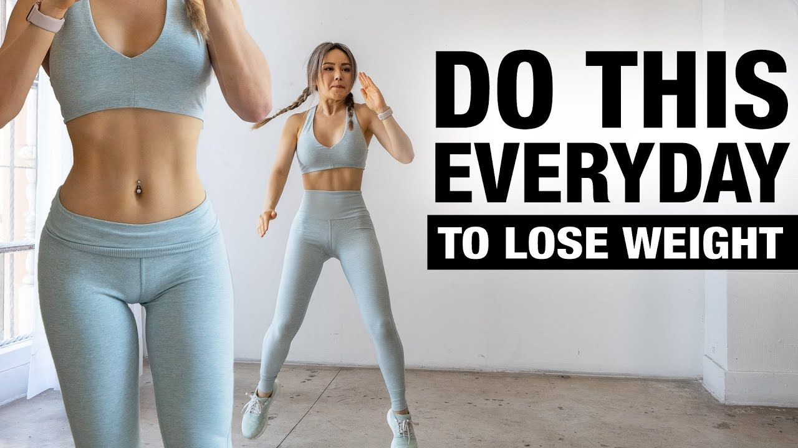
공개 콘텐츠 화면 · 식별정보 제거Hey it's 16 April 2026. Starting today, weight: 59kg waist: 29.3 inches, tummy:36 inches, bum:38 inches, thighs: 20.4 inches, arms: 10.4 inches height: 5'2 or 158 age: 15.8 Day 1✅ Day 2✅ Day 3✅ Day 4✅ Day 5✅ Day 6✅ Day 7
경계 건강 효과를 보장하거나 체중 감량을 약속하지 않는다.
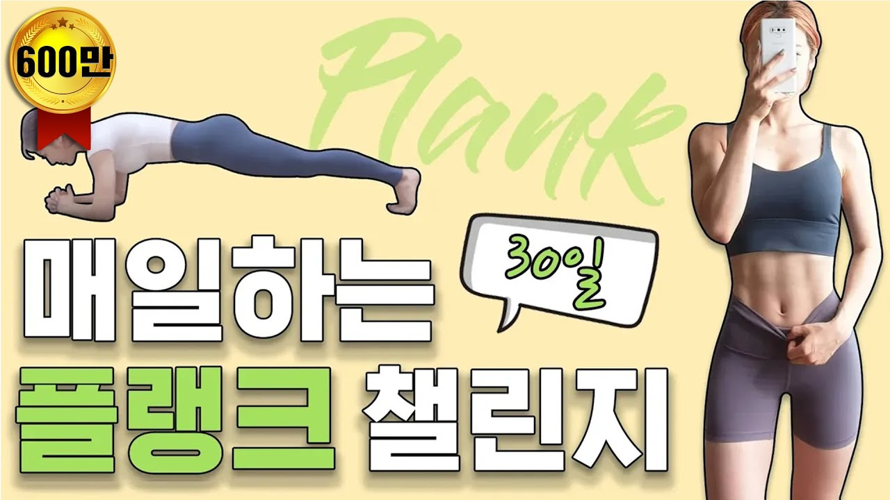
공개 콘텐츠 화면 · 식별정보 제거7/29 1일차 성공 죽을 거 같음 7/30 2일차 성공 뒤질 거 같음 7/31 3일차 성공 아침에 해서 그런지 좀 덜 힘듬 8/1 4일차 성공 으뜸언니 너무 이쁨 점점 덜 힘들어짐 처음 할 때는 땀이 폭포처럼 나옴 으뜸언니가 자세 설명 계속 해주니까 정확한 자세로 오래 버틸 수 있음 언니 사랑해 8/2 5일차 성공 원래 팔 힘으로 버티는 플랭크를 했었는데 언니 설명 들으니까 진짜 코어로 버
경계 통증이 있으면 중단하도록 원본 주의와 별도 기준이 필요하다.
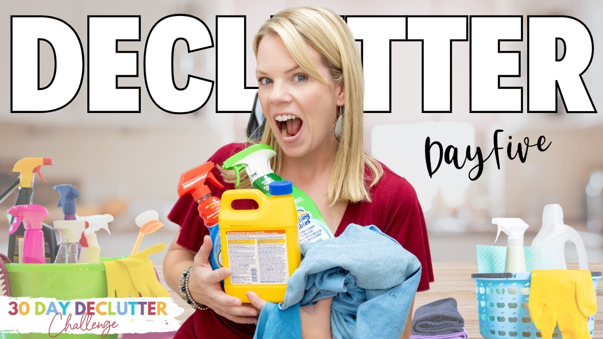
공개 콘텐츠 화면 · 식별정보 제거I love this challenge because it shows how to break down overwhelming, large tasks into small, bite-sized, easily manageable pieces. Thanks Cas! Today, day 5, is done! See everyone tomorrow!
경계 영상의 동기 부여와 커뮤니티 분위기는 원문에 남긴다.
WOW! You've put so much work into this Shea! Thank you so much~ ❤️ I'm gathering materials to start learning Italian right now and definitely adding your planner to my tool kit 😊
경계 영상 전체나 강의 내용을 복제하지 않고 실행 구조만 남긴다.
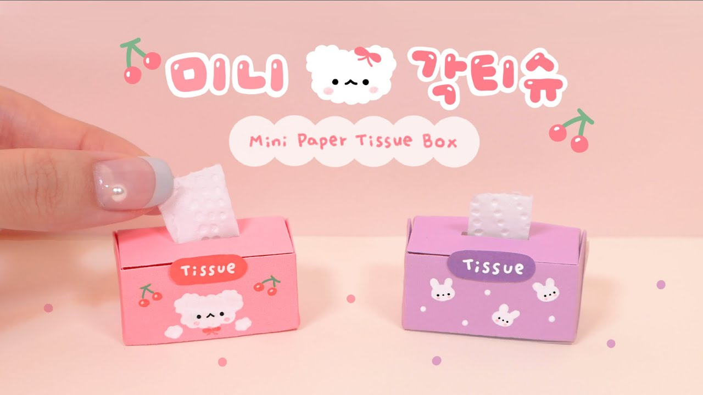
공개 콘텐츠 화면 · 식별정보 제거벌써 다 만들었어용~!! 따니언니 이쁘고 귀엽고 아기자기한 만들기 넘 감사해용!!😄💗 만드니깐 더 귀엽네용!!😄💗💕
경계 도안·영상·사진은 제작자 원문에 남긴다.
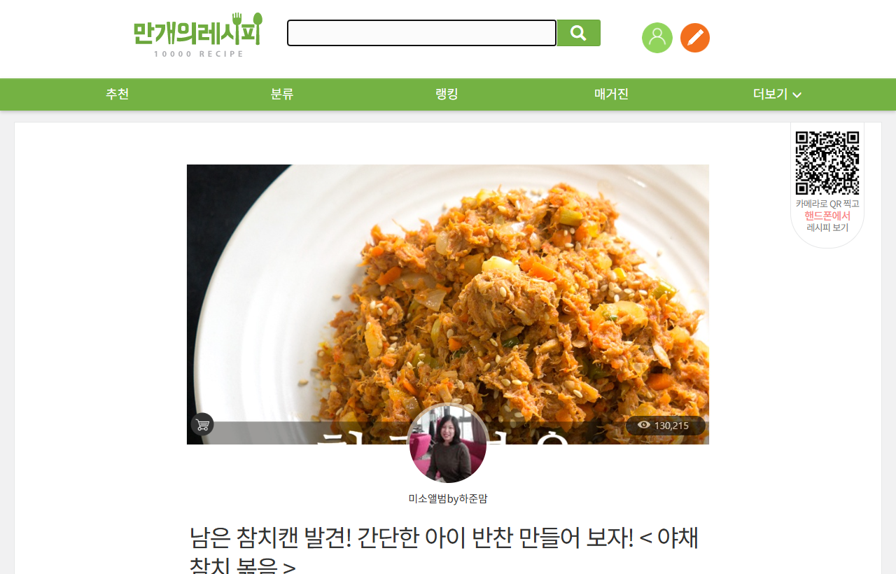
공개 콘텐츠 화면 · 식별정보 제거어린 자녀가 먹을 수 있게 매운 양념을 줄인 뒤 한 끼를 완성했다.
경계 원문 사진과 제작자의 설명은 링크로 돌아가 본다.
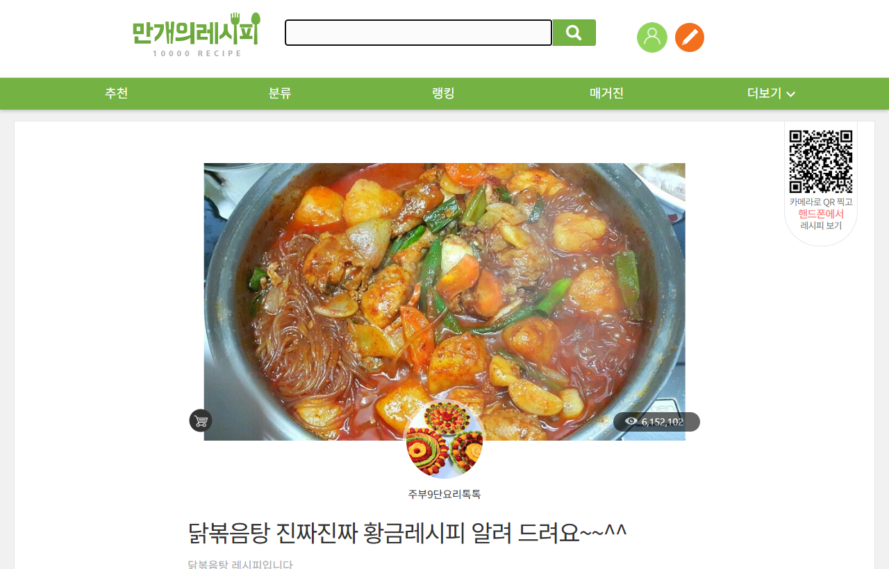
공개 콘텐츠 화면 · 식별정보 제거같은 레시피로 대여섯 번 만들고 간장 양을 줄인 방식으로 정착했다.
경계 사용자의 수정본과 제작자 원본 버전을 분리한다.
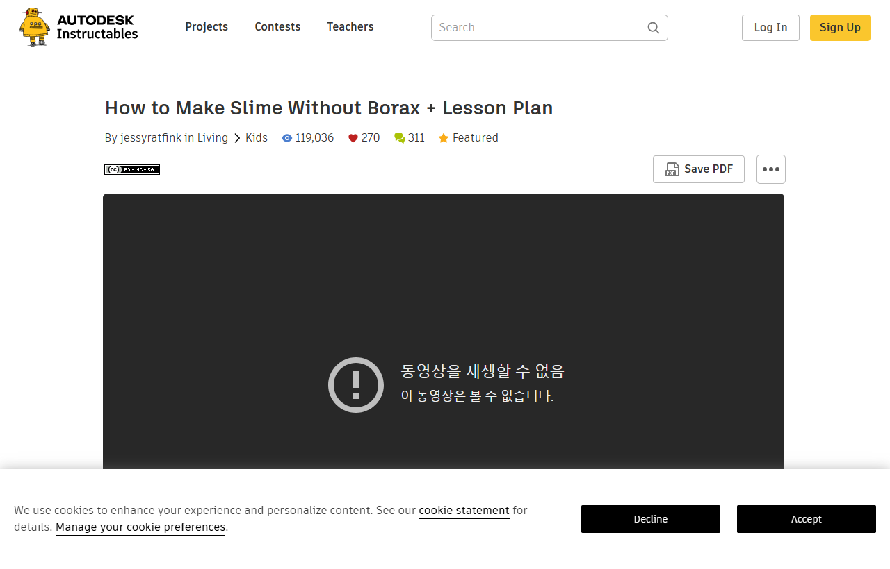
공개 콘텐츠 화면 · 식별정보 제거126명이 이 프로젝트를 만들었다고 표시된다.
경계 완료 수는 자기신고 누적값이며 성공률이 아니다.
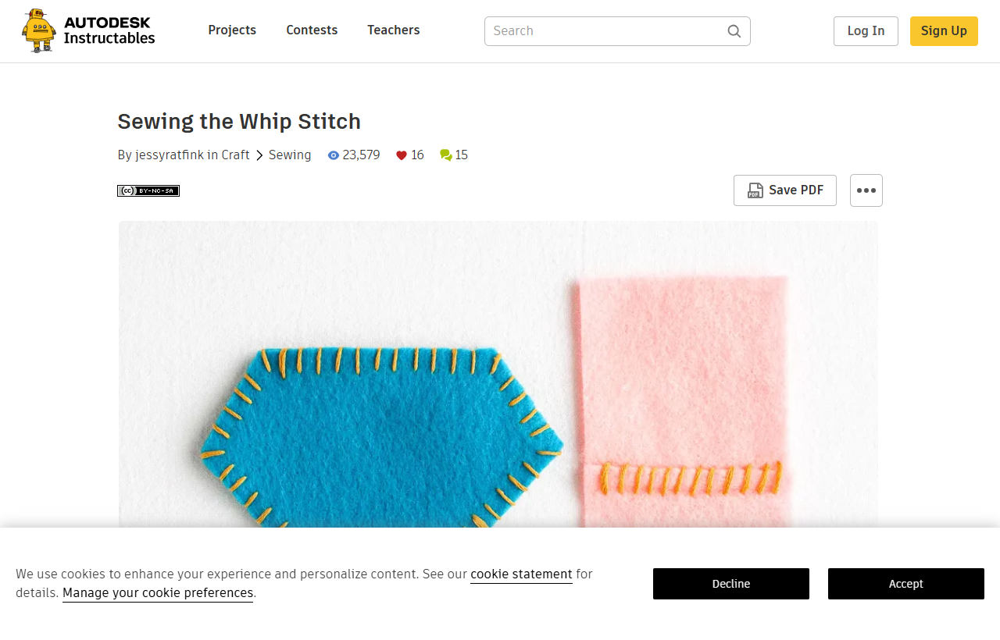
공개 콘텐츠 화면 · 식별정보 제거10명이 이 프로젝트를 만들었다고 표시된다.
경계 완성 사진과 제작자 자산을 FlowMe가 재호스팅하지 않는다.
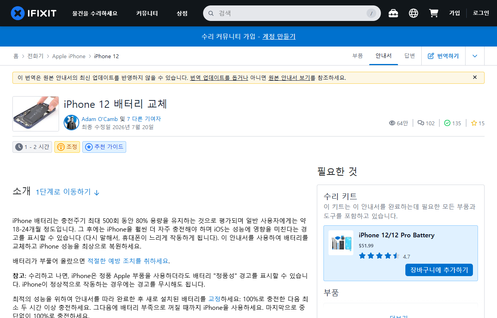
공개 콘텐츠 화면 · 식별정보 제거135명이 이 수리 안내서를 완료했다고 표시된다.
경계 고위험 수리를 요약만 보고 하게 만들지 않는다.
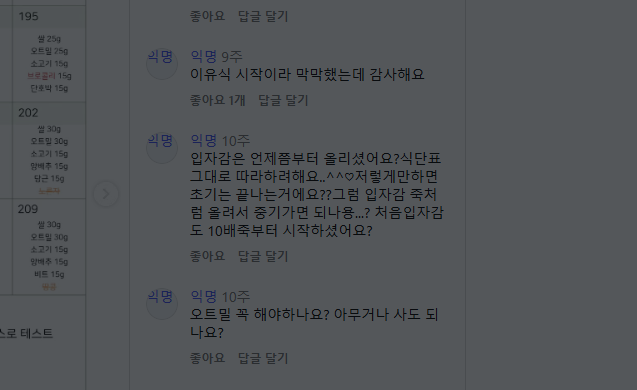
공개 콘텐츠 화면 · 식별정보 제거게시된 식단표를 그대로 따라 쓰고 싶다며 입자감과 단계 전환을 물었다.
경계 아동 건강 판단은 제공하지 않고 출처·주의를 함께 둔다.
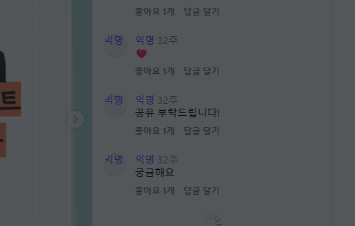
공개 콘텐츠 화면 · 식별정보 제거출력용 체크리스트 공유를 직접 요청했다.
경계 댓글 유도형 배포 구조를 수요 규모로 확대 해석하지 않는다.
제작자·출처와 결과를 먼저 본다.
지금 저장하고 날짜는 나중에 정한다.
체크리스트·표·캘린더·메모 중 하나를 고른다.
날짜, 가족 수, 재료처럼 결과를 바꾸는 값만 묻는다.
목록 전체보다 오늘 할 항목과 상태를 보여준다.
수정본을 보관하고 다음 실행에 재사용한다.
저장·도착 형식 선택·최소 입력·한 행동 보기·원문으로 돌아가기
사용함 / 수정함 / 완료함 / 다시 씀. 공개 공유는 요구하지 않는다.
어떤 버튼이 전환율을 높이는지, 사용자가 FlowMe에서 계속 관리할지는 미측정이다.
레시피·만들기·루틴 중 원본과 도착 형태가 선명한 후보를 실제 사용자 관찰 후보로 둔다.
인접 증거만 있는 19개는 날짜 미정, 최소 입력, 결과물 미리보기를 먼저 점검한다.
여권·자동차검사 같은 공식 절차는 댓글이 없어도 정확성과 마감 효용으로 평가한다.
루틴·레시피·만들기처럼 E3 이상 신호가 있는 원본. P0의 사용성 관찰을 우선한다.
엑셀·체크리스트·캘린더 요청이 반복되는 원본. 도착 형식부터 검증한다.
마감·서류·기간이 중요한 공식 원본. 댓글보다 정확성과 최신성이 기준이다.
공개 증거가 약한 새 분야. 미측정으로 표시하고 작게 시험한다.
비율은 초기 포트폴리오 구성에 대한 전략 제안이며 실제 수요 측정값이 아니다.
| # | 후보 | 카테고리 | 원본 | 증거 상태 | 다음 행동 |
|---|---|---|---|---|---|
| 1 | 신생아 시기 발달을 돕는 10가지 놀이! | 육아·가족 | 원본 ↗ | 같은 유형의 인접 증거 있음 | 인접 신호를 선별 기준으로만 쓰고 원본별 소규모 관찰 검증 |
| 2 | 출산&육아 준비물 리스트, 여기서 PDF로 받으세요! | 육아·가족 | 원본 ↗ | 같은 유형의 인접 증거 있음 | 인접 신호를 선별 기준으로만 쓰고 원본별 소규모 관찰 검증 |
| 3 | Preschool games & preschooler play ideas | 육아·가족 | 원본 ↗ | 같은 유형의 인접 증거 있음 | 인접 신호를 선별 기준으로만 쓰고 원본별 소규모 관찰 검증 |
| 4 | 공주 가볼만한곳, 부모님과 당일치기 힐링 여행코스 추천 | 여행·외출 | 원본 ↗ | 같은 유형의 인접 증거 있음 | 인접 신호를 선별 기준으로만 쓰고 원본별 소규모 관찰 검증 |
| 5 | Lower Yosemite Fall Trail | 여행·외출 | 원본 ↗ | 공개 증거를 확인하지 못함 | 공식 필수형으로 분리하고 실제 사용자 과업 세션으로 검증 |
| 6 | 5-Day Seoul Itinerary | 여행·외출 | 원본 ↗ | 같은 유형의 인접 증거 있음 | 인접 신호를 선별 기준으로만 쓰고 원본별 소규모 관찰 검증 |
| 7 | Korean Bibimbap | 요리·식단 | 원본 ↗ | 같은 유형의 인접 증거 있음 | 인접 신호를 선별 기준으로만 쓰고 원본별 소규모 관찰 검증 |
| 8 | Sheet Pan Chicken Fajitas | 요리·식단 | 원본 ↗ | 같은 유형의 인접 증거 있음 | 인접 신호를 선별 기준으로만 쓰고 원본별 소규모 관찰 검증 |
| 9 | 남은 참치캔 발견! 간단한 아이 반찬 만들어 보자! <야채 참치 볶음> | 육아·가족 | 원본 ↗ | 직접 적용 증거 있음 | 대표 Flow로 보강하고 실제 FlowMe 관찰 세션에서 검증 |
| 10 | 3 Trainer-approved Walking Workouts | 운동·습관·챌린지 | 원본 ↗ | 같은 유형의 인접 증거 있음 | 인접 신호를 선별 기준으로만 쓰고 원본별 소규모 관찰 검증 |
| 11 | Low Impact Cardio and Toning Workout for Beginners | 운동·습관·챌린지 | 원본 ↗ | 같은 유형의 인접 증거 있음 | 인접 신호를 선별 기준으로만 쓰고 원본별 소규모 관찰 검증 |
| 12 | Learning How to Learn: Powerful mental tools to help you master tough subjects | 학습·커리어 | 원본 ↗ | 같은 유형의 인접 증거 있음 | 인접 신호를 선별 기준으로만 쓰고 원본별 소규모 관찰 검증 |
| 13 | The Project Management Course: Beginner to PROject Manager | 학습·커리어 | 원본 ↗ | 같은 유형의 인접 증거 있음 | 인접 신호를 선별 기준으로만 쓰고 원본별 소규모 관찰 검증 |
| 14 | ESG와 지속가능경영 | 학습·커리어 | 원본 ↗ | 같은 유형의 인접 증거 있음 | 인접 신호를 선별 기준으로만 쓰고 원본별 소규모 관찰 검증 |
| 15 | How to Fold Clothes with the KonMari Method | 집·정리·생활관리 | 원본 ↗ | 같은 유형의 인접 증거 있음 | 인접 신호를 선별 기준으로만 쓰고 원본별 소규모 관찰 검증 |
| 16 | Professional Tips for Organizing Your Clothes Closet | 집·정리·생활관리 | 원본 ↗ | 같은 유형의 인접 증거 있음 | 인접 신호를 선별 기준으로만 쓰고 원본별 소규모 관찰 검증 |
| 17 | Zone 3 Mission #2: Your Main Bathroom | 집·정리·생활관리 | 원본 ↗ | 같은 유형의 인접 증거 있음 | 인접 신호를 선별 기준으로만 쓰고 원본별 소규모 관찰 검증 |
| 18 | 전입신고 | 공식·기타 | 원본 ↗ | 공개 증거를 확인하지 못함 | 공식 필수형으로 분리하고 실제 사용자 과업 세션으로 검증 |
| 19 | 유효기간 만료에 따른 재발급 | 집·정리·생활관리 | 원본 ↗ | 공개 증거를 확인하지 못함 | 공식 필수형으로 분리하고 실제 사용자 과업 세션으로 검증 |
| 20 | 자동차검사 목적 및 검사기간 | 공식·기타 | 원본 ↗ | 공개 증거를 확인하지 못함 | 공식 필수형으로 분리하고 실제 사용자 과업 세션으로 검증 |
| 21 | The Moving Timeline: What to Do Before and After You Move | 육아·가족 | 원본 ↗ | 같은 유형의 인접 증거 있음 | 인접 신호를 선별 기준으로만 쓰고 원본별 소규모 관찰 검증 |
| 22 | How to Create a Stunning Rehearsal Dinner at Home | 육아·가족 | 원본 ↗ | 같은 유형의 인접 증거 있음 | 인접 신호를 선별 기준으로만 쓰고 원본별 소규모 관찰 검증 |
| 23 | Dinosaur Footprints | 취미·만들기·프로젝트 | 원본 ↗ | 같은 유형의 인접 증거 있음 | 인접 신호를 선별 기준으로만 쓰고 원본별 소규모 관찰 검증 |
| 24 | How to Replace the Zipper in a Backpack | 취미·만들기·프로젝트 | 원본 ↗ | 같은 유형의 인접 증거 있음 | 인접 신호를 선별 기준으로만 쓰고 원본별 소규모 관찰 검증 |
| 슬러그 | 제목 | 카테고리 | 원본 | 도착 | 증거 상태 |
|---|---|---|---|---|---|
| moving-d30-basic | 이사 D-30 준비 Flow | 집·정리·생활관리 | 원본 ↗ | 미지정 | 같은 유형의 인접 증거 있음 |
| fridge-cleanout-weekly-plan | 냉장고 파먹기 7일 재고 소진 Flow | 요리·식단 | 원본 ↗ | sheet | 같은 유형의 인접 증거 있음 |
| passport-renewal-docs | 여권 재발급 준비 Flow | 여행·외출 | 원본 ↗ | memo | 공개 증거를 확인하지 못함 |
| english-study-30day-routine | 직장인 영어공부 30일 루틴 Flow | 공식·기타 | 원본 ↗ | 미지정 | 공개 증거를 확인하지 못함 |
| washer-tub-clean-monthly | 세탁기 통세척 월간 관리 Flow | 공식·기타 | 원본 ↗ | calendar | 공개 증거를 확인하지 못함 |
| used-car-buying-check | 중고차 구매 현장 점검 Flow | 공식·기타 | 원본 ↗ | 미지정 | 공개 증거를 확인하지 못함 |
| new-car-delivery-check | 신차 인수 점검 Flow | 공식·기타 | 원본 ↗ | sheet | 공개 증거를 확인하지 못함 |
| wedding-d180-basic | 결혼 준비 D-300 타임라인 Flow | 공식·기타 | 원본 ↗ | calendar | 공개 증거를 확인하지 못함 |
| samsung-aircon-seasonal-check | 삼성 에어컨 계절 전 점검 Flow | 공식·기타 | 원본 ↗ | internal_check | 공개 증거를 확인하지 못함 |
| samsung-washer-filter-cleaning | 삼성 미세플라스틱 저감장치 필터 청소 Flow | 집·정리·생활관리 | 원본 ↗ | internal_check | 같은 유형의 인접 증거 있음 |
| vehicle-inspection-prep | 자동차검사 D-14 준비 Flow | 공식·기타 | 원본 ↗ | hybrid | 공개 증거를 확인하지 못함 |
| computer-skills-d30-study | 컴퓨터활용능력 1급 D-30 학습 Flow | 학습·커리어 | 원본 ↗ | hybrid | 같은 유형의 인접 증거 있음 |
| real-samsung-aircon-seasonal-care | 삼성 에어컨 전문 세척 예약 준비 Flow | 공식·기타 | 원본 ↗ | 미지정 | 공개 증거를 확인하지 못함 |
| real-samsung-washer-filter-care | 삼성 비스포크 AI 콤보 배수필터 청소 Flow | 집·정리·생활관리 | 원본 ↗ | 미지정 | 같은 유형의 인접 증거 있음 |
| real-pet-registration-check | 반려견 동물등록 준비 Flow | 공식·기타 | 원본 ↗ | 미지정 | 공개 증거를 확인하지 못함 |
| real-ts-vehicle-inspection-prep | TS 자동차검사 준비 Flow | 공식·기타 | 원본 ↗ | 미지정 | 공개 증거를 확인하지 못함 |
| national-scholarship-apply | 국가장학금 신청 준비 Flow | 공식·기타 | 원본 ↗ | calendar | 공개 증거를 확인하지 못함 |
| jeonse-guarantee-apply | 전세보증금 반환보증 가입 준비 Flow | 공식·기타 | 원본 ↗ | memo | 공개 증거를 확인하지 못함 |
| welfare-benefit-finder | 복지멤버십 신청·확인 Flow | 공식·기타 | 원본 ↗ | memo | 공개 증거를 확인하지 못함 |
| small-business-fund-check | 소상공인 정책자금·지원 확인 Flow | 공식·기타 | 원본 ↗ | memo | 공개 증거를 확인하지 못함 |
| unemployment-benefit-apply | 실업급여(구직급여) 신청 준비 Flow | 공식·기타 | 원본 ↗ | memo | 공개 증거를 확인하지 못함 |
| job-seeker-allowance-apply | 국민취업지원제도 신청 준비 Flow | 공식·기타 | 원본 ↗ | memo | 공개 증거를 확인하지 못함 |
| pension-estimate-check | 국민연금 가입내역·예상연금 확인 Flow | 공식·기타 | 원본 ↗ | memo | 공개 증거를 확인하지 못함 |
| infant-health-checkup-schedule | 영유아 건강검진 일정 Flow | 육아·가족 | 원본 ↗ | calendar | 공개 증거를 확인하지 못함 |
| adult-vaccine-schedule-check | 성인 예방접종 이력·상담 준비 Flow | 공식·기타 | 원본 ↗ | memo | 공개 증거를 확인하지 못함 |
| first-passport-issue | 여권 신규 발급 준비 Flow | 여행·외출 | 원본 ↗ | memo | 공개 증거를 확인하지 못함 |
| overseas-safety-register | 해외여행 안전정보·영사조력 준비 Flow | 여행·외출 | 원본 ↗ | memo | 공개 증거를 확인하지 못함 |
| customs-traveler-declare | 해외여행 휴대품 면세범위·신고 Flow | 여행·외출 | 원본 ↗ | memo | 공개 증거를 확인하지 못함 |
| used-car-ownership-transfer | 자동차 이전등록(명의이전) 준비 Flow | 공식·기타 | 원본 ↗ | memo | 공개 증거를 확인하지 못함 |
| ev-subsidy-apply | 전기차 구매보조금 신청 준비 Flow | 공식·기타 | 원본 ↗ | memo | 공개 증거를 확인하지 못함 |
| property-local-tax-pay | 지방세 조회·납부 Flow | 공식·기타 | 원본 ↗ | memo | 공개 증거를 확인하지 못함 |
| tax-refund-find | 국세 미수령 환급금 확인 Flow | 집·정리·생활관리 | 원본 ↗ | memo | 공개 증거를 확인하지 못함 |
| safe-inheritance-onestop | 안심상속 원스톱 신청 준비 Flow | 육아·가족 | 원본 ↗ | memo | 공개 증거를 확인하지 못함 |
| childcare-fee-support-apply | 어린이집 보육료 지원 신청 Flow | 육아·가족 | 원본 ↗ | memo | 공개 증거를 확인하지 못함 |
| military-exam-prep | 병역판정검사 준비 Flow | 공식·기타 | 원본 ↗ | memo | 공개 증거를 확인하지 못함 |
| weekly-meal-plan | 평일 5일 저녁 식단 Flow | 요리·식단 | 원본 ↗ | sheet | 같은 유형의 인접 증거 있음 |
| closet-organize-1day | 옷장 정리 1일 챌린지 Flow | 집·정리·생활관리 | 원본 ↗ | memo | 같은 유형의 인접 증거 있음 |
| kitchen-reset-organize | 냉장고 식재료 정리 Flow | 집·정리·생활관리 | 원본 ↗ | memo | 같은 유형의 인접 증거 있음 |
| reading-habit-30day | 매일 15분 읽기 Flow | 공식·기타 | 원본 ↗ | calendar | 공개 증거를 확인하지 못함 |
| travel-packing-list | 여행 짐 싸기 체크리스트 Flow | 여행·외출 | 원본 ↗ | memo | 같은 유형의 인접 증거 있음 |
| home-cafe-daily | 아이스 커피 한 잔 만들기 Flow | 육아·가족 | 원본 ↗ | memo | 같은 유형의 인접 증거 있음 |
| portfolio-4week | 개발 프로젝트 포트폴리오 4주 Flow | 학습·커리어 | 원본 ↗ | hybrid | 같은 유형의 인접 증거 있음 |
| blog-youtube-start | 블로그 글을 영상으로 옮기기 Flow | 취미·만들기·프로젝트 | 원본 ↗ | memo | 같은 유형의 인접 증거 있음 |
| pet-health-observation | 강아지 건강검진 상담 준비 Flow | 공식·기타 | 원본 ↗ | memo | 공개 증거를 확인하지 못함 |
| ID | 카테고리 | 자동 | 1차 | 2차 | 최종 | 익명화 발췌 |
|---|---|---|---|---|---|---|
| YT-EXE-01-R01 | 운동·습관·챌린지 | E5 | E0 | E0 | E0 · 일반 반응 | "The last exercise" Me: HELL YEEEEAH "... of the second set" i can't explain this disappointment... |
| YT-EXE-01-R02 | 운동·습관·챌린지 | E0 | E0 | E0 | E0 · 일반 반응 | Chloe: "squeeze those abs" me: ...what abs? I'll squeeze my tummy fat instead ok? |
| YT-EXE-01-R06 | 운동·습관·챌린지 | E4 | E0 | E0 | E0 · 일반 반응 | I just realized that the dislikes are probably people who didn’t stick to it and therefore got no results saying it didn |
| YT-EXE-01-R08 | 운동·습관·챌린지 | E3 | E3 | E3 | E3 · 실행 중 | Doing this in the heat of July is a level of masochism I didn't know I am capable of achieving |
| YT-EXE-01-R20 | 운동·습관·챌린지 | E3 | E5 | E5 | E5 · 반복·재사용 | Hey it's 16 April 2026. Starting today, weight: 59kg waist: 29.3 inches, tummy:36 inches, bum:38 inches, thighs: 20.4 in |
| YT-EXE-02-R04 | 운동·습관·챌린지 | E3 | E3 | E3 | E3 · 실행 중 | I started today date is 20/05/26 Wight is 101 kg . Wish me luck 🤞 |
| YT-EXE-02-R06 | 운동·습관·챌린지 | E0 | E0 | E0 | E0 · 일반 반응 | Shout out to everyone working on bettering themselves no matter what level |
| YT-EXE-02-R07 | 운동·습관·챌린지 | E3 | E0 | E0 | E0 · 일반 반응 | Wow, Wade and Angie are such inspirations! I can't imagine doing this without my regular dose of lyfefuel for that energ |
| YT-EXE-02-R08 | 운동·습관·챌린지 | E5 | E5 | E5 | E5 · 반복·재사용 | Yesterday I tried this but only made it until 8 minutes. Today I did it again and made it to 15. I know it's not much, b |
| YT-EXE-02-R13 | 운동·습관·챌린지 | E4 | E4 | E4 | E4 · 완료·결과 | I was diagnosed with PCOS. I tried working out in my bedroom but my dad saw me. It was awkward so I stop. The next day a |
| YT-EXE-03-R04 | 운동·습관·챌린지 | E4 | E4 | E4 | E4 · 완료·결과 | 2026년 3월 7일 아침 1회 저녁 1회 성공 50대 여자입니다 😅 |
| YT-EXE-03-R07 | 운동·습관·챌린지 | E4 | E5 | E5 | E5 · 반복·재사용 | 7/29 1일차 성공 죽을 거 같음 7/30 2일차 성공 뒤질 거 같음 7/31 3일차 성공 아침에 해서 그런지 좀 덜 힘듬 8/1 4일차 성공 으뜸언니 너무 이쁨 점점 덜 힘들어짐 처음 할 때는 땀이 폭포처럼 나옴 |
| YT-EXE-03-R12 | 운동·습관·챌린지 | E0 | E0 | E0 | E0 · 일반 반응 | 2025년에도 하는 사람 손 👋 |
| YT-EXE-03-R13 | 운동·습관·챌린지 | E4 | E5 | E5 | E5 · 반복·재사용 | 11/22 처음시작 어렵게 성공 11/23 요가매트없어서 이불깔고 힘겹게 성공 11/24 궁디가 높다는 남편의 지적에 짜증내며 성공 11/25 일주일은 한줄 알았는데 아직 4일차 성공 11/26 오늘은 뭐가 잘못됐는 |
| YT-EXE-03-R19 | 운동·습관·챌린지 | E3 | E5 | E5 | E5 · 반복·재사용 | 12/3 2일차. 어제보다 더 힘들었다. 양말 신으니 미끄러워서 잘 안 되었다ㅠㅠ 아침에 한번 하고 저녁에 재도전했다. 중간에 못 한 부분도 있지만 다시 도전하면서 마지막까지 해냈다. 대단해!! 12/4 배 근육이 |
| YT-EXE-03-R20 | 운동·습관·챌린지 | E5 | E5 | E5 | E5 · 반복·재사용 | 매일 싸웁니다. 근만할까... 잠깐 쉴까... 오늘은 반만하고 말까... 그러다.. 5분도 안되는 시간을 못견디는 제 자신이 싫어질까봐 질끈 눈 감고 이를 꽉물고 합니다. 매일 이 감정과 혼란을 느끼지만 조금씩 사라 |
| YT-EXE-04-R01 | 운동·습관·챌린지 | E5 | E5 | E5 | E5 · 반복·재사용 | 지난 7개월 동안 땅끄 부부님 동영상으로 63kg에서 49kg 살빼고 현재도 계속 유지 중입니다. 칼소폭-> 핵핵 매운맛 칼소폭-> 스쿼트 100개 챌린지->종아리 날씬해 지는 스트레칭 이 루틴을 계속하니 허벅지에 |
| YT-EXE-04-R03 | 운동·습관·챌린지 | E5 | E1 | E1 | E1 · 실행 의향 | 스쿼트는 이것만 봐요 ㅠㅠㅠ이 댓글보시면 하트눌러주세요 매일 스쿼트할게요ㅠㅠㅠ😱😭 |
| YT-EXE-04-R04 | 운동·습관·챌린지 | E3 | E3 | E3 | E3 · 실행 중 | 4일차인데 스쿼트가 익숙하지 않다,,,마지막 점프잭...? 내 인생이 하늘로 점프하는줄 |
| YT-EXE-04-R10 | 운동·습관·챌린지 | E5 | E5 | E5 | E5 · 반복·재사용 | 안녕하세요~ 오늘로 영상을 따라한지 7개월이 된 사람입니다! 여자친구에게 따끔하게 한소리 들어 시작했는데 어느 순간 여기까지 왔네요 매일 매일 스쿼트 챌린지 ,플랭크 챌린지 .유산소,전신 근력 운동을 아침 저녘 꾸준 |
| YT-EXE-04-R13 | 운동·습관·챌린지 | E4 | E5 | E5 | E5 · 반복·재사용 | 열흘정도 찐핵핵+2주복근 했고 어제부터 스쿼트 30일챌린지 추가해서 열심히 홈트중입니다!(현재 뱃살best5+허리둘레-5cm+스쿼트30일+칼소폭찐핵핵+전신스트레칭 루틴) 6/23 💯 6/24 💯 6/25 💯 ( |
| YT-FOD-01-R01 | 요리·식단 | E0 | E0 | E0 | E0 · 일반 반응 | Prepped food is generally fine for a week in the fridge. I spent $200k on a bachelor's degree to tell you this |
| YT-FOD-01-R09 | 요리·식단 | E5 | E0 | E0 | E0 · 일반 반응 | If you absolutely hate having the same thing everyday you could make a meal with a carb you like, veggies you like, and |
| YT-FOD-02-R03 | 요리·식단 | E0 | E0 | E0 | E0 · 일반 반응 | Holy 20 meals. Very detailed. There's no excuse to not try meal prep after watching this. |
| YT-FOD-02-R12 | 요리·식단 | E3 | E0 | E0 | E0 · 일반 반응 | "don't overthink when you cook" "if it's not perfect it's okay" I'm kind of a perfectionist and I'm trying to change tha |
| YT-FOD-03-R04 | 요리·식단 | E5 | E0 | E0 | E0 · 일반 반응 | 매일 같은거 안 질리고 먹을 수 있는것도 능력이라고 하더라고요😂 😢 |
| YT-FOD-03-R06 | 요리·식단 | E0 | E0 | E0 | E0 · 일반 반응 | 이렇게 파는거 사먹고 싶다😅😅😅 |
| YT-FOD-03-R18 | 요리·식단 | E5 | E1 | E1 | E1 · 실행 의향 | 영상 보자마자 저장 꾹! ㅋㅋ 요즘 다이어트 식단 지겨운 메뉴만 반복했거든요ㅠ 요즘은 모로페린도 같이 챙기고 있어서 컨디션도 유지되니까 이런 간편 레시피가 해먹기 완전 딱이에요. |
| YT-FOD-04-R08 | 요리·식단 | E0 | E0 | E0 | E0 · 일반 반응 | 말씀도 예쁘게 하시고 야물딱지게 설명 하시니 고 |
| YT-FOD-04-R09 | 요리·식단 | E5 | E3 | E1 | E1 · 실행 의향 | 정말 감사합니다 혼자사는 할머니라 뭘 해먹을지 매일 밑반찬 걱정없이 해 먹을 수 있게 되었네요 사랑받는 엄마가 되겄네요 |
| YT-HOB-01-R09 | 취미·만들기·프로젝트 | E0 | E0 | E0 | E0 · 일반 반응 | Very cute, easy and well explained. Thanks for sharing it 🍦 |
| YT-HOB-01-R18 | 취미·만들기·프로젝트 | E4 | E4 | E4 | E4 · 완료·결과 | OMG! Soooooo Kawaii! When I saw this video, I instantly clicked on it, to everybody who's reading this, if you haven't m |
| YT-HOB-02-R02 | 취미·만들기·프로젝트 | E4 | E0 | E0 | E0 · 일반 반응 | 따니님은 유트브 성공적일거 같아요!!❤ |
| YT-HOB-02-R06 | 취미·만들기·프로젝트 | E5 | E0 | E0 | E0 · 일반 반응 | 우왓!!넘 귀여워요!!매일 응원해욧 |
| YT-HOB-02-R08 | 취미·만들기·프로젝트 | E5 | E5 | E5 | E5 · 반복·재사용 | 따니님!전 심심할때마다 따니님 영상보면서 만들기하고있어요! 오늘도 너무재밌어요! 미니각틱슈 갔고다니면 너무 좋을것 같아요!매일 토요일날 영상 올려주셔서 감사합니다! 주말잘보내시고 언제나 화이팅! 사랑해요!~♡ |
| YT-HOB-02-R11 | 취미·만들기·프로젝트 | E5 | E0 | E0 | E0 · 일반 반응 | 따니님 항상 좋은 영상 올려주셔서 감사합니다 ~~~♡♡ 매일 챙겨 보고 있어요😄 이제 곧 개학이지만 따니님 영상 꼭 챙겨볼게요~♡ 따룽해요~^^ |
| YT-HOB-02-R12 | 취미·만들기·프로젝트 | E4 | E4 | E4 | E4 · 완료·결과 | 벌써 다 만들었어용~!! 따니언니 이쁘고 귀엽고 아기자기한 만들기 넘 감사해용!!😄💗 만드니깐 더 귀엽네용!!😄💗💕 |
| YT-HOB-02-R16 | 취미·만들기·프로젝트 | E0 | E0 | E0 | E0 · 일반 반응 | 언니 너무 조오아요오!!! 지금까지 영상 지이인짜 감사해요! |
| YT-HOB-03-R17 | 취미·만들기·프로젝트 | E0 | E4 | E4 | E4 · 완료·결과 | 저는 그안에 반짝이가루도넣어 봤어요 |
| YT-HOB-03-R20 | 취미·만들기·프로젝트 | E4 | E4 | E4 | E4 · 완료·결과 | 저도 따라 해봤는데 너무 예쁘네요 |
| YT-HOB-04-R19 | 취미·만들기·프로젝트 | E0 | E0 | E0 | E0 · 일반 반응 | 😅와와와와아 😮 |
| YT-HOM-01-R11 | 집·정리·생활관리 | E5 | E0 | E0 | E0 · 일반 반응 | The very thought that I get 'for those who have stayed to the end' for 30 days just makes me very happy... I love your v |
| YT-HOM-01-R12 | 집·정리·생활관리 | E3 | E3 | E3 | E3 · 실행 중 | I am so overwhelmed and 5 minutes a day isn’t going to make much of a dent at all. BUT I’m doing it anyway and you can a |
| YT-HOM-02-R01 | 집·정리·생활관리 | E5 | E0 | E0 | E0 · 일반 반응 | These daily five minute declutters are teaching us what we need to do daily. This helps parents teach kids, it helps tho |
| YT-HOM-02-R03 | 집·정리·생활관리 | E0 | E0 | E0 | E0 · 일반 반응 | For the first time ever, I am excited for a declutter challenge. This is totally doable and feels so good. |
| YT-HOM-02-R06 | 집·정리·생활관리 | E3 | E3 | E3 | E3 · 실행 중 | I love this challenge because it shows how to break down overwhelming, large tasks into small, bite-sized, easily manage |
| YT-HOM-02-R07 | 집·정리·생활관리 | E5 | E5 | E5 | E5 · 반복·재사용 | 12 things gone today. It’s nice doing these simple tasks daily and it’s like a game. |
| YT-HOM-02-R16 | 집·정리·생활관리 | E5 | E0 | E0 | E0 · 일반 반응 | I love this entire series - manageable, bite-size tidying and declutterring! A little every day goes a long way :) |
| YT-HOM-02-R19 | 집·정리·생활관리 | E5 | E0 | E0 | E0 · 일반 반응 | I love having a daily dose of Cas (and decluttering)!!! |
| YT-HOM-02-R20 | 집·정리·생활관리 | E2 | E0 | E0 | E0 · 일반 반응 | I look forward to each day's challenge. This is kind of like an Advent calendar!! |
| YT-HOM-03-R09 | 집·정리·생활관리 | E0 | E0 | E0 | E0 · 일반 반응 | 집밥을 드시나봐요 날마다 맛있는 식탁일것 같네요 |
| YT-HOM-04-R09 | 집·정리·생활관리 | E0 | E0 | E0 | E0 · 일반 반응 | ❤ The plants, the white clouds, the snow, the scene and sometimes the background music bring out a sense of relaxation, |
| YT-LRN-01-R02 | 학습·커리어 | E5 | E0 | E0 | E0 · 일반 반응 | Committing to daily study is a challenge in itself! |
| YT-LRN-01-R06 | 학습·커리어 | E5 | E5 | E5 | E5 · 반복·재사용 | Oh wow, I am doing better then I thought I have been learning French for 6 months 3 hours every day. I do a lot of it wh |
| YT-LRN-01-R11 | 학습·커리어 | E5 | E1 | E1 | E1 · 실행 의향 | The real mean of small step every day i should give it a try 🤩 |
| YT-LRN-01-R13 | 학습·커리어 | E0 | E0 | E0 | E0 · 일반 반응 | Alles gute 🙋👏👏👏👏👏👏👏👏🇱🇹🇧🇷 |
| YT-LRN-02-R01 | 학습·커리어 | E5 | E5 | E5 | E5 · 반복·재사용 | I am still doing my English routine, and I started doing that for 30 days, it was like three months ago. And I wholehear |
| YT-LRN-02-R03 | 학습·커리어 | E5 | E1 | E1 | E1 · 실행 의향 | Journaling in the language you're trying to learn is such a good tip, specially if you already have some basic knowledge |
| YT-LRN-02-R09 | 학습·커리어 | E5 | E0 | E0 | E0 · 일반 반응 | My first language is Portuguese, English is my second language, now I am learning Deutsch and Italian |
| YT-LRN-02-R10 | 학습·커리어 | E2 | E2 | E2 | E2 · 결과물 수요 | WOW! You've put so much work into this Shea! Thank you so much~ ❤️ I'm gathering materials to start learning Italian rig |
| YT-LRN-02-R15 | 학습·커리어 | E5 | E5 | E5 | E5 · 반복·재사용 | Your video popped up on my feed but i found this topic insteresting. I do a similar thing with English, i study every da |
| YT-LRN-02-R17 | 학습·커리어 | E3 | E2 | E2 | E2 · 결과물 수요 | Ciao Bella come stai? I love your tips. Currently struggling to figure out how to build a language study plan. So thanks |
| YT-LRN-02-R20 | 학습·커리어 | E0 | E0 | E0 | E0 · 일반 반응 | Shea la más bella de USA. |
| YT-LRN-03-R15 | 학습·커리어 | E4 | E0 | E0 | E0 · 일반 반응 | Today Im finished my Fazar prayed and Practice English with chat gpt. Learning English seems very difficult for me😢 I w |
| YT-LRN-04-R02 | 학습·커리어 | E1 | E1 | E1 | E1 · 실행 의향 | 영어 학습법에 대해 여러 영상들을 봤는데 가장 과장 없고 체계적으로 안내주시는 것 같아요. 잘 활용해볼게요. 감사합니다^^ |
| YT-LRN-04-R09 | 학습·커리어 | E3 | E2 | E2 | E2 · 결과물 수요 | ⭐️ 월금토 회화루틴 - 1차복습은 그날 강의영상끝나고 5-10분 바로 - 2차복습은 5~6회 후에 쌓였을 때 -> 월금토 월금(토)->2주차 토요일마다 스프레스시트 복습 ⭐️화목 변역 루틴 - 아 이게뭐였지! 고통 |
| YT-LRN-04-R14 | 학습·커리어 | E5 | E0 | E0 | E0 · 일반 반응 | 꾸준히! 반복!!! 하는 것이 가장 중요하네요. |
| YT-PAR-01-R05 | 육아·가족 | E0 | E0 | E0 | E0 · 일반 반응 | Thank you for sharing your ideas! It helps me because I look after my 20 month old grandson, and am always trying to fin |
| YT-PAR-01-R10 | 육아·가족 | E3 | E3 | E1 | E1 · 실행 의향 | This is great! I’m trying to work on the toddler I take care of to not throw the stuff all over the place |
| YT-PAR-01-R16 | 육아·가족 | E4 | E4 | E4 | E4 · 완료·결과 | I tried these activities with my 20 month old. To give you an idea of how they went, with the first activity she got fru |
| YT-PAR-02-R01 | 육아·가족 | E4 | E4 | E4 | E4 · 완료·결과 | I tried a bunch of these and my son just threw and destroyed everything 😂😂 love it |
| YT-PAR-02-R09 | 육아·가족 | E0 | E0 | E0 | E0 · 일반 반응 | Mindblowing activities..just loved it |
| YT-PAR-03-R09 | 육아·가족 | E0 | E0 | E0 | E0 · 일반 반응 | Such an interesting toddler development activities. Great idea friend. Big like 2. |
| YT-PAR-04-R10 | 육아·가족 | E0 | E0 | E0 | E0 · 일반 반응 | I love that you and Mike have found a way to mesh your individual strengths to help your girls and other families! Maybe |
| YT-TRV-01-R11 | 여행·외출 | E0 | E0 | E0 | E0 · 일반 반응 | I have duplicates of everything in my toiletry bag (razor, toothbrush, even extra contact lenses). I restock it before e |
| YT-TRV-01-R20 | 여행·외출 | E3 | E3 | E3 | E3 · 실행 중 | You guys rock and helped me alot with down sizing my items to travel I'm still downsizing and I am down to 2 backpacks n |
| YT-TRV-02-R10 | 여행·외출 | E4 | E0 | E0 | E0 · 일반 반응 | I kind of wish airports could have an analog of free little libraries people make in communities, where I could leave my |
| YT-TRV-02-R13 | 여행·외출 | E2 | E5 | E5 | E5 · 반복·재사용 | I definitely agree with packing a few days ahead of time. It really does help to narrow stuff down, gives you time to re |
| YT-TRV-02-R15 | 여행·외출 | E5 | E0 | E0 | E0 · 일반 반응 | I could not do a long haul flight without taking off my shoes. The second I’m in my seat my shoes are off and a fresh pa |
| YT-TRV-02-R16 | 여행·외출 | E0 | E0 | E0 | E0 · 일반 반응 | Same tips used for lightweight backpacking. They work! |
| YT-TRV-02-R18 | 여행·외출 | E4 | E4 | E4 | E4 · 완료·결과 | I just finished a month trip to Malaysia - Singapore with week-long stays in Penang and Malacca (I'm literally on my las |
| YT-TRV-03-R18 | 여행·외출 | E0 | E2 | E2 | E2 · 결과물 수요 | 영상 넘 많이 참고가 되었어요 좋은 정보 감사합니다. 구글맵 공유 부탁드립니다^^ |
| YT-TRV-04-R19 | 여행·외출 | E4 | E0 | E0 | E0 · 일반 반응 | 따라하면 성공하는 부산2박3일 여행 정보 잘 보았어요 ㆍ👍😊 |
| YT-TRV-04-R20 | 여행·외출 | E0 | E0 | E0 | E0 · 일반 반응 | ㅎㅎ 정말 코스를 알차게 짜놓으셨네요~ 부산 여행가시는분들 이 코스대로만 가도 좋겠어요~ ㅎㅎ |
84건 중 82건 일치(97.6%). 두 건은 E3/E1로 갈려 E1로 보수적으로 확정했다.
자동 렌더링과 공개 댓글 분석은 실제 FlowMe 사용자 검증이 아니다. 실제 관찰 기준선은 0/15로 유지한다.